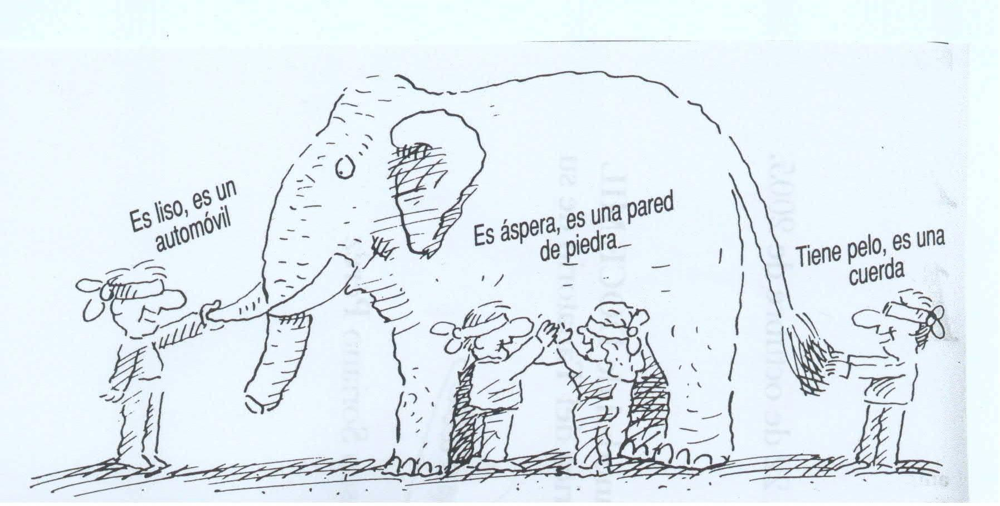
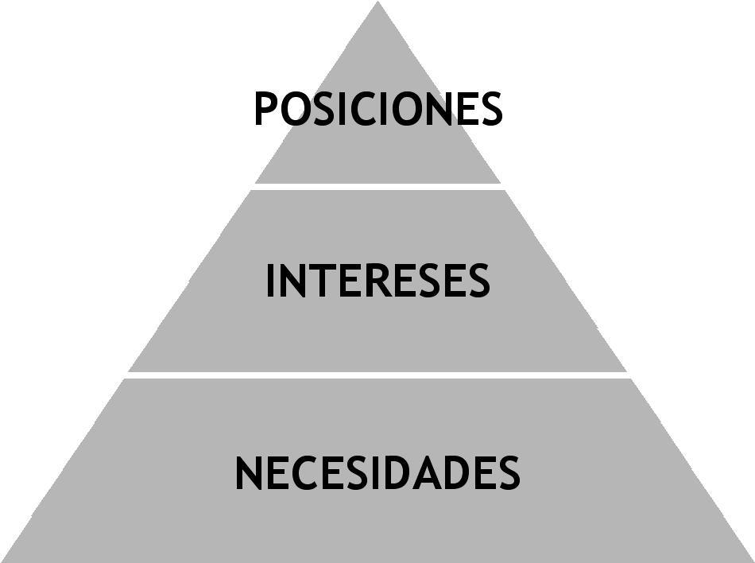
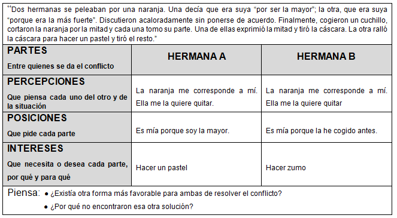

2.2 Gestión positiva del conflicto.
Percepciones: En todo conflicto, hemos de ser conscientes que cada persona tiene un punto de vista particular sobre la realidad, es su percepción. Tenemos que conseguir que las partes aprendan tanto a expresar su percepción como a escuchar e interesarse por conocer la de la otra parte.

El elefante y los seis sabios ciegos.
He aquí que una vez había seis sabios ciegos que vivían en la misma ciudad.
Los seis eran ciegos. Un buen día, un elefante llegó a la ciudad. Los seis sabios querían saber cómo era un elefante. De manera que, como eran ciegos, cada uno de ellos se acercó al elefante y empezó a palparlo.
El primero tocó la oreja grande y plana del elefante. “El elefante es como un abanico”, dijo.
El segundo tocó una de las patas del elefante. “El elefante es como un árbol” dijo.
El tercero le tocó la cola: “Estáis muy equivocados: el elefante es como una cuerda.”
El cuarto le tocó la trompa. “Os equivocáis, el elefante es como una serpiente”, dijo.
El quinto le tocó uno de los colmillos. “¡El elefante es como una lanza!”, manifestó.
“No, no!”, gritó el sexto. “¡Parecéis tontos, el elefante es como una pared muy alta!” (había tocado el elefante por el costado).
“¡Abanico!”, “¡Árbol!”, “¡Cuerda!”, “¡Serpiente!”, “¡Lanza!”, “¡Pared!”... Y nunca se pusieron de acuerdo en cómo era un elefante.
En un conflicto los puntos de vista de las personas implicadas son siempre diferentes. Es importante trabajar sobre esos puntos de vista para abrir la historia y poco a poco avanzar hacia la construcción de una narración que incluya los elementos más significativos para cada persona. Esa divergencias perceptivas, son por definición, la esencia y causa de los conflictos.
Identificar intereses: Es importante prestar atención a los distintos elementos que forman parte del conflicto, pues ello nos proporcionará una mayor comprensión, permitiéndonos gestionarlo con mayor eficacia. Nos puede ser de ayuda el apoyo gráfico para examinar el “iceberg del conflicto”. Mediante esta figura se pretende trasladar la complejidad de elementos que componen el conflicto, mediante una imagen simple, pero contundente como el iceberg. La primera idea que traslada dicha figura es que en el conflicto existen elementos más visibles, que se manifiestan y perciben con facilidad, mientras que muchos de sus componentes están ocultos o no son fácilmente visibles.
 “El iceberg del conflicto”
Ante un conflicto hemos de aprender a diferenciar posturas o posiciones, de los intereses o necesidades.
Las posiciones. Es lo que en principio reclama cada parte, pues piensan que así se sentirán satisfechos. Son las respuestas que dan las personas al ¿qué quieres?. En una situación conflictiva las personas suelen expresar sus posiciones. Parten de puntos de vista particulares y hacen peticiones concretas. Desde las posiciones es muy difícil gestionar un conflicto de manera que todo el mundo salga beneficiado. Por ello, buscamos descubrir que intereses hay debajo de las posiciones.
Los intereses. Son los beneficios que deseamos obtener a través del conflicto, normalmente aparecen debajo de las posiciones. Los intereses muestran los motivos, los deseos de la persona que ha entrado en conflicto. Dos personas o grupos pueden entrar en conflicto por intereses muy distintos y, seguramente, aunque pidan lo mismo, pueden estar persiguiendo diferentes objetivos.
Las necesidades. Por debajo de los intereses todavía están las necesidades, se trata de aquellos mínimos de bienestar, físico y psicológico, seguridad, relaciones con los demás, reconocimiento personal… a los que nadie nunca puede renunciar
En una situación conflictiva las personas suelen expresar sus posiciones. A partir de puntos de vista particulares hacen peticiones concretas. Desde las posiciones es muy difícil gestionar un conflicto de manera que todo el mundo salga beneficiado. Hay que descubrir que intereses hay por debajo de las posiciones. Un ejercicio que nos puede ilustrar y experimentar la diferencia entre percepciones/ posiciones e intereses, es el ejercicio de la mandarina.
“Dos hermanas se peleaban por una naranja. Una decía que era suya “por ser la mayor”; la otra, que era suya “porque era la más fuerte”. Discutieron acaloradamente sin ponerse de acuerdo. Finalmente, cogieron un cuchillo, cortaron la naranja por la mitad y cada una tomo su parte. Una de ellas exprimió la mitad y tiró la cáscara. La otra ralló la cáscara para hacer un pastel y tiró el resto.”
| Tabla | ||
|---|---|---|
| PARTES | HERMANA A | HERMANA B |
| PERCEPCIONES | ||
| POSICIONES | ||
| INTERESES |
Piensa:
- ¿Existía otra forma más favorable para ambas de resolver el conflicto?
- ¿Por qué no encontraron esa otra solución?
Después de pensarlo un poco, mira la solución :
